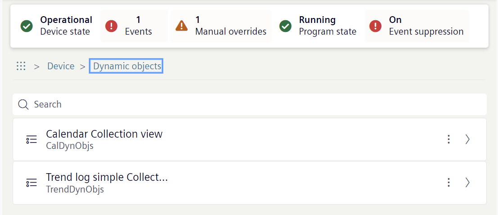

Dynamic objects
The Desigo system supports the creation, modification and deletion of dynamic BACnet objects. Such dynamic objects are normally managed by Desigo CC but can also be edited by another vendor. To ensure that no dynamic objects are lost, a data upload must be carried out before an extension of the control program starts. These uploaded dynamic objects are saved in a separate area in ABT Site and reloaded into the dynamic area of the device when they are downloaded again.
- Go to the Object view tab.
- Select Device.
- Select Dynamic objects.
- These are displayed depending on the existing dynamic object categories.

- Select to obtain more detailed information on the dynamic objects.